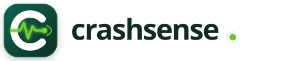

Brand Identity Update
Unique Logo System for CrashSense
Transforming the standard letter "C" into an intelligent telematics & collision detection mark.
← Back to Live Dashboard
★ RECOMMENDED

Option 1 · Flagship
The Telemetry Impact Pulse
An energetic ECG/G-force shockwave pulse line seamlessly traverses the letter "C", peaking at the moment of impact and resolving into an active lime radar beacon.
- Collision shockwave spike (MPU6500 G-Force peak)
- Active GPS & telematics radar beacon ping
- Concentric IoT broadcast radio waves
- Maintains the clean, premium emerald & lime aesthetic
Option 2 · Technical
Sensor Radar & Vector Arc
Engineered like an automotive inertial measurement instrument. Concentric sensor arcs track angular roll and pitch with a directional deceleration arrow.
- Dual concentric telemetry tracks
- Directional impact/momentum vector pin
- Crosshair target reticle dot in wordmark
- High-precision aerospace & telematics feel
Option 3 · Protection
The Vital Lifeline Shield
A contoured automotive safety shield enclosing a vital lifeline monitor, connecting collision detection directly to emergency passenger rescue.
- Automotive impact protection shield silhouette
- Integrated ECG heartbeat vital sensor
- Emergency satellite SOS broadcast dot
- Communicates safety, security, and survival
✦ What Makes Option 1 Unique?
1. Impact Shockwave Line
Instead of a generic flat C, an energetic pulse cuts across the equator, representing sudden G-Force deceleration detected by the MPU6500.
2. Active Telematics Beacon
Nestled inside the opening of the C is a glowing neon lime ping dot emitting concentric radar waves — symbolizing instant cloud & SOS transmission.
3. Dual-Identity Dot
The period in crashsense. isn't just punctuation — it's surrounded by a satellite radar ring that matches the icon badge.
4. Automotive Color Harmony
Retains the rich dark emerald (#0c4a3b) with high-visibility electric lime (#72cf32), creating instant recognition at any scale.
Multi-Scale Crispness Test (16px to 96px)
16 × 16 (Favicon)